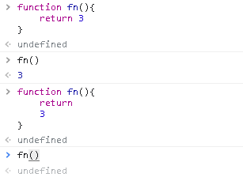

JS基本语法
JS基本语法
表达式与语句
- 表达式：
- 1+2 表达式的值为3
- add(1,2)表达式的值为函数的 返回值
- console.log 表达式的值为函数本身
- console.log(3) 表达式的值为 undefined, 3 是打印出来东西
- 语句：
- var a = 1是一个语句
- 二者的区别：
- 表达式一般都有值，语句可能有也可能没有
- 语句一般会改变环境
- 上述两句话，并非绝对的
JS大小写敏感
- object 和 Object 是不同的
- function 和 Function 是不同的
空格
- 大部分空格没有实际意义
- 加回车大部分时候也不影响
- 只有一个地方不能加回车，那就是return 后面，否则会返回undefined

标识符
- 规则：
- 第一个字符，可以是unicode字母或$或_或中文（不可以数字开头）
- 变量名是标识符
- var _ = 1
- var $ = 2
- var _____ = 6
- var 你好 = ‘hi’
区块block
- 把代码包在一起
1 | { |
- 常与 if / for / while 合用
if语句
- 语法
- if(表达式) {语句1}else{语句2}
- {}在语句只有一句的时候可以省略，不建议这样做
- 变态情况
- 表达式里可以很变态，如 a = 1
- 语句1里可以非常变态，如嵌套if else
- 语句2里可以非常变态，如嵌套 if else
- 缩进也可以很变态，如面试题常常下套
1 | let a = 2 |
switch 语句
- 语法
1 | switch (表达式){ |
问号冒号 表达式
- 表达1？ 表达式2: 表达式3
1 | let num = prompt('输入数字') |
&& 短路逻辑
1 | if(window.f1){ |
- ‘A&&B’: 如果A为真，就执行B，如果A为假，就不执行后面的
- ‘A && B && C && D’: 取第一个假值，或者D
||短路逻辑
1 | if( !a ){ |
- 常见的应用场景就是给a设定默认值
1 |
|
while 循环
- 语法: while(表达式){语句}
1 | let a = 0.1 |
for 循环
- for 是 while循环的方便写法
1 | for(var i = 0; i < 5; i++){ |
- setTimeout 就是过一段时间执行
1 |
|
- 注：如果把var 换成 let ,就会打印出 0，1，2，3，4
1 | for(let i = 0; i < 5; i++){ |
break 和 continue
- break 是跳出离它最近的一个循环
- continue 是跳出本次循环，下次继续
1 | for(var i = 0; i < 10; i++){ |
label
1 | { |
- 上述代码： 一个代码块里有一个label， a:1 表示标签a,且其值为1，【它不是对象】
1 | foo:{ |
- foo 表示 label 的标识符是foo,break foo 表示退出当前的 label，所以代码会输出1，2
1 | { |
All articles in this blog are licensed under CC BY-NC-SA 4.0 unless stating additionally.